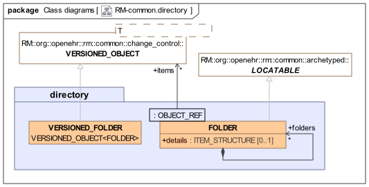

Directory Package
Overview
The directory package is illustrated below. It provides a simple abstraction of a versioned folder structure. The VERSIONED_FOLDER class is the binding of VERSIONED_OBJECT<T> to the class FOLDER, i.e. it is a VERSIONED_OBJECT<FOLDER>. This means that each of its versions is a Folder structure rather than a single Folder. It provides a means of versioning FOLDER structures over time, which is useful in the EHR, Demographics service or anywhere else where Folders are used to group things. A FOLDER instance contains more FOLDERs and/or items, which are references to other (usually versioned) objects. A FOLDER structure is therefore like a directory containing references to objects. Since they are references, multiple references to the same object are possible, allowing the structure to be used to mutiply classify other objects. If it is used with VERSIONED_COMPOSITIONs for example, the folders might be used to represent episodes and at the same time problem groups. Any individual Folder may contain meta-data in its details attribute (type ITEM_STRUCTURE), which may be archetyped in the same manner as similar attributes throughout the openEHR RM.

FOLDER structures inside the VERSIONED_FOLDER are archetypable structures, and FOLDER archetypes can be created in the same fashion as say SECTION archetypes for the EHR.
Paths
Directory paths are built using the name attribute values inherited from LOCATABLE into each FOLDER object. In real data, these will usually be derived from the value of the archetype_node_id attribute, plus a uniqueness modifier if required. Example paths (e.g. within the EHR):
/folders[hospital episodes]/items[1]
/folders[patient entered data]/folders[diabetes monitoring]
/folders[homeopathy contacts]
Uniqueness modifiers are appended in brackets, and are only needed to differentiate folders at the same node that would otherwise have the same names, e.g.
[hospital episodes]
[hospital episodes(car accident Aug 1998)]
Class Descriptions
VERSIONED_FOLDER Class
-
Definition
-
Effective
-
BMM
-
UML
Class |
VERSIONED_FOLDER |
|
|---|---|---|
Description |
A version-controlled hierarchy of |
|
Inherit |
||
| VERSIONED_FOLDER | |
|---|---|
A version-controlled hierarchy of |
|
Inherits: VERSIONED_OBJECT |
|
Attributes |
|
VERSIONED_OBJECT.uid: |
Unique identifier of this version container in the form of a UID with no extension. This id will be the same in all instances of the same container in a distributed environment, meaning that it can be understood as the uid of the virtual version tree. |
VERSIONED_OBJECT.owner_id: |
Reference to object to which this version container belongs, e.g. the id of the containing EHR or other relevant owning entity. |
VERSIONED_OBJECT.time_created: |
Time of initial creation of this versioned object. |
Functions |
|
VERSIONED_OBJECT.version_count (): |
Return the total number of versions in this object. |
VERSIONED_OBJECT.all_version_ids (): |
Return a list of ids of all versions in this object. |
VERSIONED_OBJECT.all_versions (): |
Return a list of all versions in this object. |
VERSIONED_OBJECT.has_version_at_time ( |
True if a version for time |
VERSIONED_OBJECT.has_version_id ( |
True if a version with |
VERSIONED_OBJECT.version_with_id ( |
Return the version with |
VERSIONED_OBJECT.is_original_version ( |
True if version with |
VERSIONED_OBJECT.version_at_time ( |
Return the version for time |
VERSIONED_OBJECT.revision_history (): |
History of all audits and attestations in this versioned repository. |
VERSIONED_OBJECT.latest_version (): |
Return the most recently added version (i.e. on trunk or any branch). |
VERSIONED_OBJECT.latest_trunk_version (): |
Return the most recently added trunk version. |
VERSIONED_OBJECT.trunk_lifecycle_state (): |
Return the lifecycle state from the latest trunk version. Useful for determining if the version container is logically deleted. |
VERSIONED_OBJECT.commit_original_version ( |
Add a new original version. |
VERSIONED_OBJECT.commit_original_merged_version ( |
Add a new original merged version. This commit function adds a parameter containing the ids of other versions merged into the current one. |
VERSIONED_OBJECT.commit_imported_version ( |
Add a new imported version. Details of version id etc come from the |
VERSIONED_OBJECT.commit_attestation ( |
Add a new attestation to a specified original version. Attestations can only be added to Original versions. |
Invariants |
|
VERSIONED_OBJECT.Version_count_valid: |
|
VERSIONED_OBJECT.All_version_ids_valid: |
|
VERSIONED_OBJECT.All_versions_valid: |
|
VERSIONED_OBJECT.Latest_version_valid: |
|
VERSIONED_OBJECT.Uid_validity: |
|
{
"name": "VERSIONED_FOLDER",
"documentation": "A version-controlled hierarchy of `FOLDERs` giving the effect of a directory. ",
"ancestors": [
"VERSIONED_OBJECT"
]
}FOLDER Class
-
Definition
-
Effective
-
BMM
-
UML
Class |
FOLDER |
|||
|---|---|---|---|---|
Description |
The concept of a named folder.
|
|||
Inherit |
||||
Attributes |
Signature |
Meaning |
||
0..1 |
items: |
The list of references to other (usually) versioned objects logically in this folder. |
||
0..1 |
Sub-folders of this |
|||
0..1 |
details: |
Archetypable meta-data for |
||
Invariants |
Folders_valid: |
|||
| FOLDER | |||
|---|---|---|---|
The concept of a named folder.
|
|||
Attributes |
|||
Runtime name of this fragment, used to build runtime paths. This is the term provided via a clinical application or batch process to name this EHR construct: its retention in the EHR faithfully preserves the original label by which this entry was known to end users. |
|||
Design-time archetype identifier of this node taken from its generating archetype; used to build archetype paths. Always in the form of an at-code, e.g. At an archetype root point, the value of this attribute is always the stringified form of the |
|||
LOCATABLE.uid: |
Optional globally unique object identifier for root points of archetyped structures. |
||
Links to other archetyped structures (data whose root object inherits from |
|||
LOCATABLE.archetype_details: |
Details of archetyping used on this node. |
||
LOCATABLE.feeder_audit: |
Audit trail from non-openEHR system of original commit of information forming the content of this node, or from a conversion gateway which has synthesised this node. |
||
items: |
The list of references to other (usually) versioned objects logically in this folder. |
||
Sub-folders of this |
|||
details: |
Archetypable meta-data for |
||
Functions |
|||
Value equality: return True if Parameters
|
|||
Reference equality for reference types, value equality for value types. Parameters
|
|||
Create new instance of a type. |
|||
Type name of an object as a string. May include generic parameters, as in |
|||
Any.not_equal alias "!=", "≠" ( |
True if current object not equal to |
||
Parent of this node in a compositional hierarchy. |
|||
PATHABLE.item_at_path ( |
The item at a path (relative to this item); only valid for unique paths, i.e. paths that resolve to a single item. |
||
PATHABLE.items_at_path ( |
List of items corresponding to a non-unique path. |
||
PATHABLE.path_exists ( |
True if the path exists in the data with respect to the current item. |
||
PATHABLE.path_unique ( |
True if the path corresponds to a single item in the data. |
||
The path to an item relative to the root of this archetyped structure. |
|||
Clinical concept of the archetype as a whole (= derived from the archetype_node_id' of the root node) |
|||
True if this node is the root of an archetyped structure. |
|||
Invariants |
|||
LOCATABLE.Links_valid: |
|||
LOCATABLE.Archetyped_valid: |
|||
LOCATABLE.Archetype_node_id_valid: |
|||
Folders_valid: |
|||
{
"name": "FOLDER",
"documentation": "The concept of a named folder.\n\nNOTE: It is strongly recommended that the inherited attribute `_uid_` be populated in _top-level_ (i.e. tree-root) `FOLDER` objects, using the UID copied from the `_object_id()_` of the `_uid_` field of the enclosing `VERSION` object. +\nFor example, the `ORIGINAL_VERSION.uid` `87284370-2D4B-4e3d-A3F3-F303D2F4F34B::uk.nhs.ehr1::2` would be copied to the `_uid_` field of the top `FOLDER` object.",
"ancestors": [
"LOCATABLE"
],
"properties": {
"items": {
"_type": "P_BMM_CONTAINER_PROPERTY",
"name": "items",
"documentation": "The list of references to other (usually) versioned objects logically in this folder. ",
"type_def": {
"container_type": "List",
"type": "OBJECT_REF"
},
"cardinality": {
"lower": 0,
"upper_unbounded": true
}
},
"folders": {
"_type": "P_BMM_CONTAINER_PROPERTY",
"name": "folders",
"documentation": "Sub-folders of this `FOLDER`. ",
"type_def": {
"container_type": "List",
"type": "FOLDER"
},
"cardinality": {
"lower": 0,
"upper_unbounded": true
}
},
"details": {
"_type": "P_BMM_SINGLE_PROPERTY",
"name": "details",
"documentation": "Archetypable meta-data for `FOLDER`.",
"type": "ITEM_STRUCTURE"
}
},
"invariants": {
"Folders_valid": "not folders.is_empty"
}
}